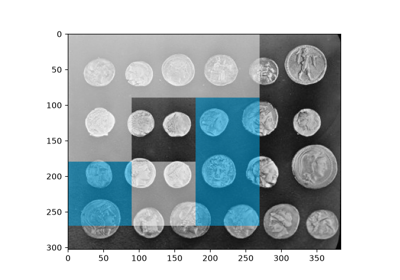
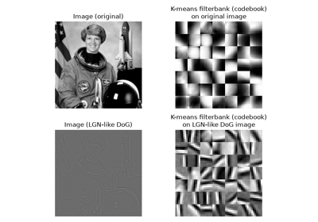
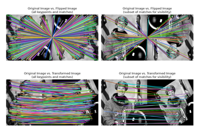
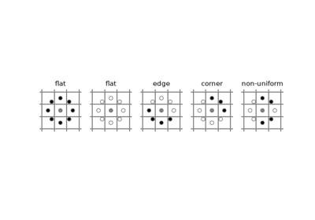

Detection of features and objects#

Multi-Block Local Binary Pattern for texture classification
Multi-Block Local Binary Pattern for texture classification

Gabors / Primary Visual Cortex “Simple Cells” from an Image
Gabors / Primary Visual Cortex "Simple Cells" from an Image

SIFT feature detector and descriptor extractor
SIFT feature detector and descriptor extractor



Local Binary Pattern for texture classification
Local Binary Pattern for texture classification